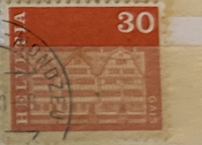
| SOURCE | TITLE| IMAGE MATCH | click to source page |
| www.ebay.com | Germany, Postage Stamp, #937, 944-946 Mint NH, 1966 ... | 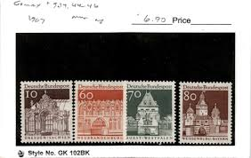 |
| www.ebay.com | Germany 1967 60pf TREPTOW GATE, NEUBRANDENBURG SC 944 MNH | eBay | 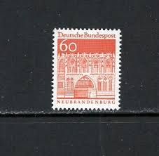 |
| www.hipstamp.com | Czech Republic (Czechoslovakia) 1967 Prague Castle & St ... | 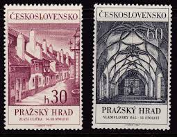 |
| www.dreamstime.com | GERMANY - CIRCA 1966: a Postage Stamp from Germany, Showing ... | 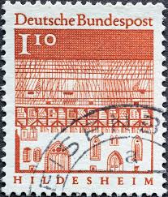 |
| www.ebay.com | Germany - DDR, Postage Stamp, #955-962 Mint LH, 1967 Lenin ... | 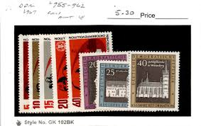 |
| www.flickr.com | stamp Germany 1.10 DM 110 pf. postage Hildesheim Deutschla ... | 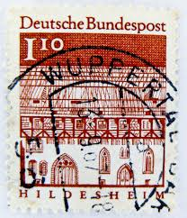 |
| www.etsy.com | TEN 10c 50 Star Runway Airmail Stamp .. Vintage Unused ... | |
| www.buyhungarianstamps.com | 3420-3421 Czech Republic - Buildings, Set of 2 (MNH ... | 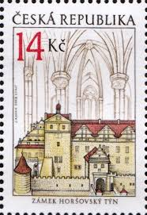 |
| findyourstampsvalue.com | POSTAGE DUE STAMPS - Hradcany at Prague: Surcharged with New ... | 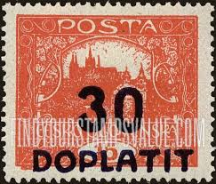 |
| www.facebook.com | Oude postzegels te koop van die hele wereld. | 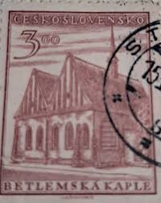 |
| www.alamy.com | Deutsche bundespost stamp, 60 hi-res stock photography and ... | 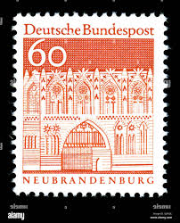 |
| www.buyhungarianstamps.com | 2185-2189 Czechoslovakia - Town Hall Clock, Prague, by Josef ... | 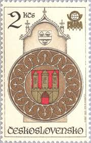 |
| www.mysticstamp.com | C72 - 1968 10c 50-Star Runway, Carmine, Perf. 11x10.5 ... | 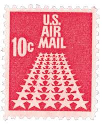 |
| littlepostagehouse.com | 50 Stars Air Mail Postage Stamps (10 Cents Each) — Little ... |  |
| www.etsy.com | French Republique Francaise 50f Stamp; Rose Red; F/NH, NG ... | 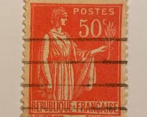 |
| www.lubelskistamps.com | Poland Stamps – Polish Stamp Specialist | 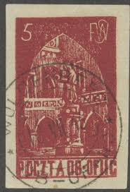 |
| br.wikipedia.org | Restr:Hradcany 14N.jpg - Wikipedia | 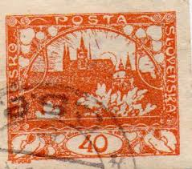 |
| www.youtube.com | Siegel auction Posta Ceskoslovenska 1919, June 2024 by ... | 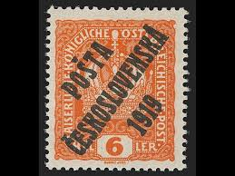 |
| www.mysticstamp.com | J84 - 1931 10c Postage Due, Dull Carmine, Perf. 11x10.5 ... | 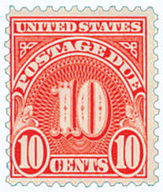 |
| www.ebay.com | West Germany - 1966 -1969 - Building Structures 12th Century ... | 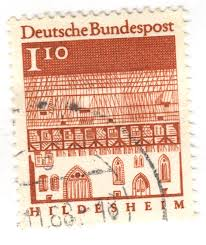 |
| www.gettyimages.com | 67 Slovakia Stamp Stock Photos, High-Res Pictures, and ... | 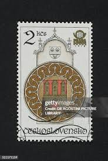 |
| www.instagram.com | 🌿 Rare Italian Stamp – Le Olive (Basilicata), 35 Lire ... | 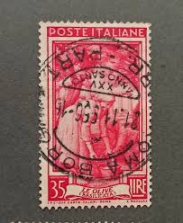 |
| postalmuseum.si.edu | 400 lire Philatelic Department, Vatican City single ... | 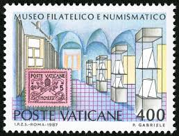 |
| en.wikipedia.org | Postage stamps and postal history of the Czech Republic ... | 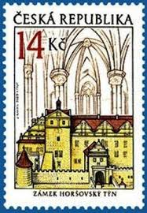 |
| worldstampsproject.org | Philately of Czechoslovakia: Hradčany, 40h stamp – World ... | 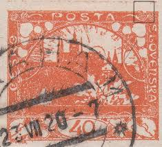 |
| www.shutterstock.com | Letters Series: Over 87,087 Royalty-Free Licensable Stock ... | 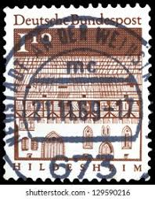 |
| aukro.cz | ČSSR II. - 1611-12 Pražský hrad - Zlatá ulička a ... | 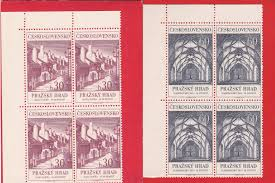 |
| apfelbaumstamps.com | Apfelbaum Stamps | 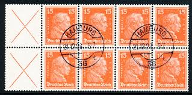 |
| www.bobshop.co.za | Poland - Stamps Poland 1972 Polish Horse riding between the ... | 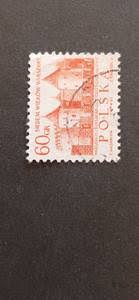 |
| www.fairobserver.com | Italian Fascism and Peace: Incompatible or Inseparable? | 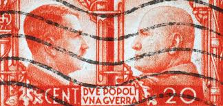 |
| picryl.com | 4 Hildesheim on stamps, Deutsche bundespost stamps ... | 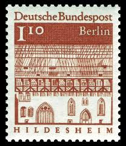 |
| lubelskistamps.com | Poland Stamps – Polish Stamp Specialist | 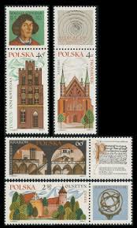 |
| www.123rf.com | Old Stamp From Austria. Cancelled In Stockerau In 1946 ... | 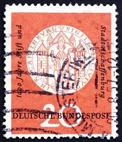 |
| www.stampedia.net | stampedia CZECHOSLOVAKIA STAMP catalog | 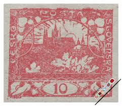 |
| www.sbiram.cz | 1967, 30-60h Pražský hrad, série, Nr.1611-12, razítkované ... | 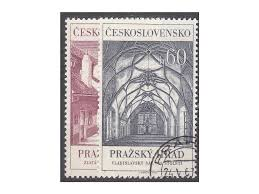 |
| www.leboncoin.fr | Timbre oblitéré Deutsche Bundespost , Berlin ... | 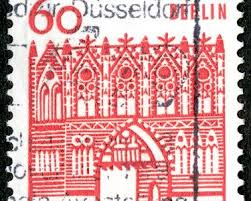 |
| postalmuseum.si.edu | 5c Tribonian Presenting Pandects to Justinian I single ... | 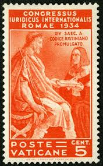 |
| www.youtube.com | History of Postage Stamps - YouTube | 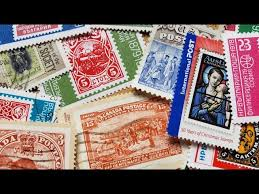 |
| stampforgeries.com | Stamp forgeries of Naples | Stampforgeries of the World | 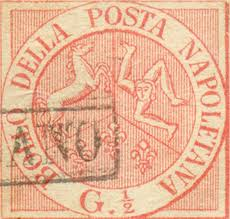 |
| www.stampcollectingblog.com | Hungarian 1986/1991 definitive postage stamp series: “Castles I” | 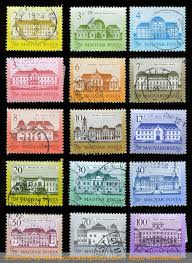 |
| www.burda-auction.com | Spiral, bar and frame types / Perforated stamps / HRADČANY ... | 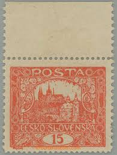 |
| commons.wikimedia.org | File:Magyar Posta Stamp 10 fillér.jpg - Wikimedia Commons | 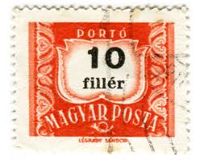 |
| volstamp.in.ua | Buy 1987 Poland Stamp ("Poznan and Town Hall", by Stanislaw ... | 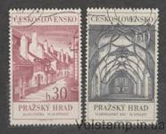 |
| www.italianstamps.co.uk | Italian Stamps - RSI 20c destroyed monuments issue | 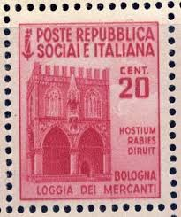 |
| hungarianstamps.co.uk | Hungarian Stamps - 1946 Issues under the Provisional Government | 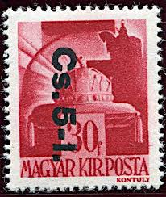 |
| www.bobshop.co.za | Romania - Romania 1960's Postage Due stamps 12 Single and 2 ... | 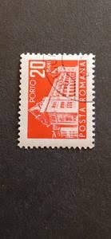 |
| www.kitantik.com | Almanya Pulu - Germany Stamp - Postadan Geçmiş Pul Filateli ... | 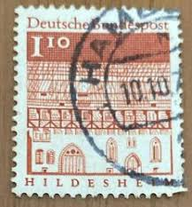 |
| www.buyhungarianstamps.com | 2103-2107 Czechoslovakia - Prague Renaissance Windows (MNH ... | 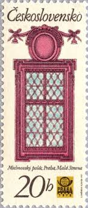 |
| aicolympic.org | 066 - The 1944 Gross Born POW Olympics - AICO | 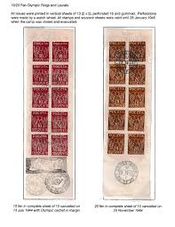 |
| www.linns.com | Ingenious and eye-popping overprints, surcharges can be fun ... | 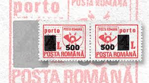 |
| www.briefmarken-brd-berlin.de | Berlin 278 ER-4-er Block l.u. - briefmarken-brd-berlin.de | 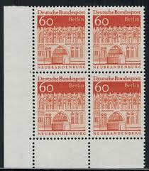 |
| www.etsy.com | Hungary Postage Due Stamp Set 1922 to 1965 Coat of Arms Post ... | |
| jf-stamps.dk | 1944 1945 REP SOCIALE ITALIA Loggia dei Mercanti Bologna 20 CENT | |
| www.freestampcatalogue.com | Stamps from Germany, Federal Republic with the theme Europa ... | |
| lamasbolano.com | SELLOS ALEMANIA ORIENTAL 1958 - RECONSTRUCCION DEL PUERTO DE ... | |
| www.lastdodo.com | Stamps from Czechoslovakia Stamp catalogue - LastDodo | |
| www.arpinphilately.com | Buy France #7 - Ceres (1849) 40¢ | Arpin Philately |  |
| deqistamps.com | Postage stamps Errors | |
| findyourstampsvalue.com | AIR POST STAMPS - PRAGA 1962 Emblem, View of Prague and ... | |
| www.alamy.com | Postmarked stamp from the Federal Republic of Germany in the ... |
{kind=link}
{kind=link}